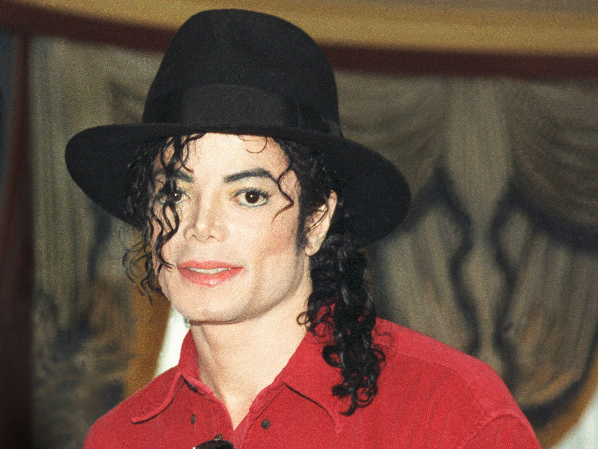
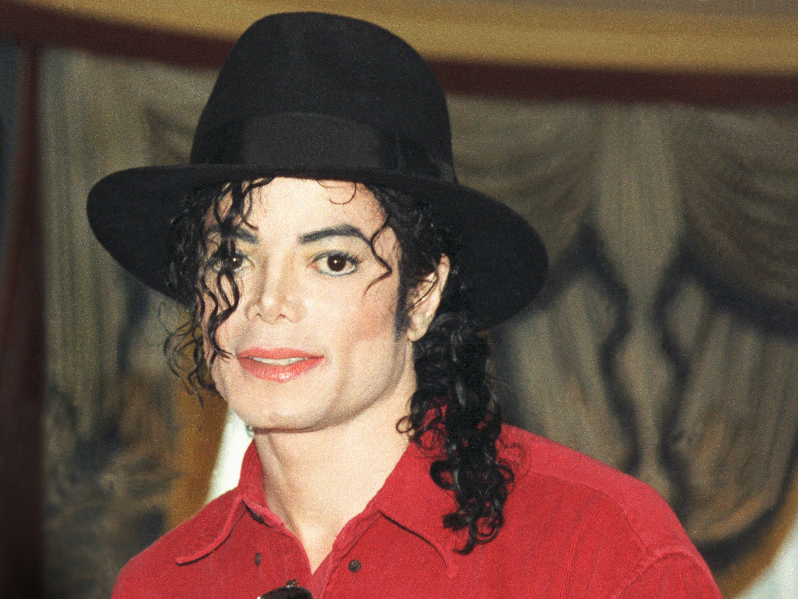

Michael Jackson
Ich bin ein Perfektionist, ein Visionär, der durch Musik, Tanz und Liebe versucht hat, die Welt zu verändern. Mein Herz schlägt für die Kinder, die Menschlichkeit und die Magie, die uns alle verbindet.
Steckbrief
- Name: Michael Joseph Jackson
- Geboren: 29. August 1958, Gary, Indiana, USA
- Gestorben: 25. Juni 2009, Los Angeles, Kalifornien, USA
- Berufe: Sänger, Songwriter, Tänzer, Produzent
- Spitzname: King of Pop
Über Michael
Michael Jackson begann seine Karriere als Mitglied der Jackson 5, bevor er eine der größten Solokarrieren aller Zeiten startete. Seine Zusammenarbeit mit Produzent Quincy Jones führte zu legendären Alben wie Off the Wall, Thriller und Bad. Er gewann insgesamt 13 Grammy Awards.
Alben und Erfolge
| Album | Jahr | Verkäufe | Besonderheiten |
|---|---|---|---|
| Off the Wall | 1979 | > 20 Mio. | 4 Top-10-Singles |
| Thriller | 1982 | 66–70 Mio. | 8 Grammys, meistverkauftes Album |
| Bad | 1987 | > 35 Mio. | 5 Nummer-1-Singles |
| Dangerous | 1991 | ~ 32 Mio. | Aufwendig produziert |
| HIStory | 1995 | ~ 20 Mio. | Double-Album |
| Invincible | 2001 | > 8 Mio. | Letztes Studioalbum |
 
